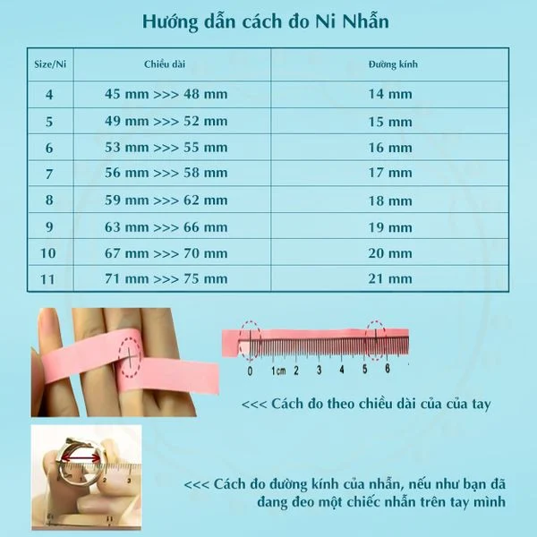
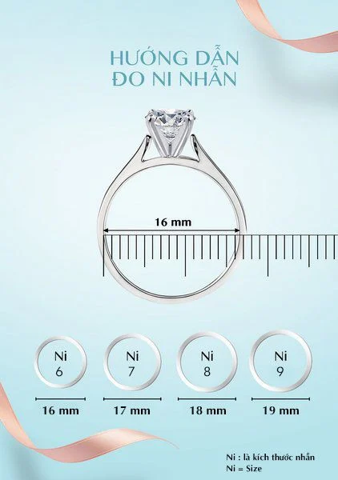
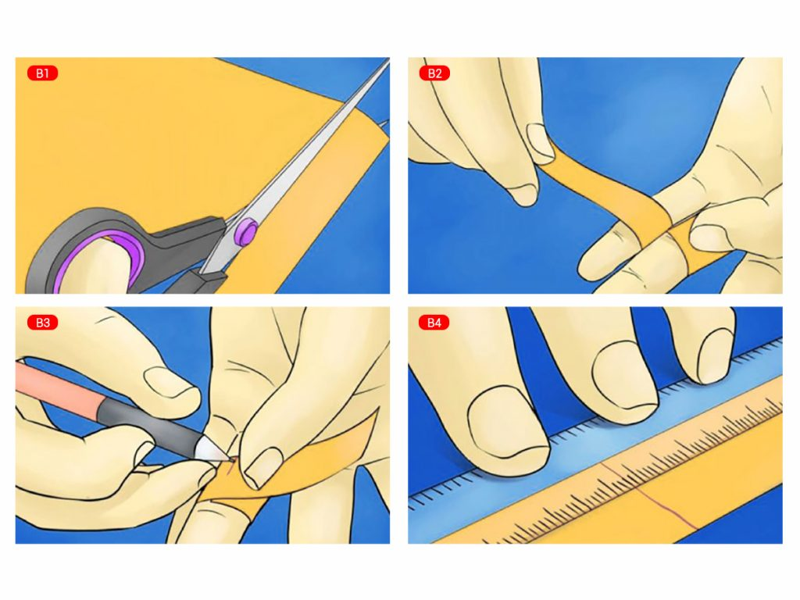

.png)
RING-MEASURING INSTRUCTION
Customers who purchase goods at stores and dealer showrooms will receive delivery at the time of completing order payment. Products are always inspected and verified before receiving and leaving the store.
Method 1: Select a ring that comfortably fits your finger and then follow these steps:
- To ascertain the inner diameter of the ring, employ a ruler with millimeter markings.
- Match the measured millimeters with the ring diameter indicated in the provided chart.
- The number within the circle corresponds to your ring size.


Method 2:
- Step 1: Using scissors to precisely cut a strip of paper measuring 5 millimeters in width, then proceed to encircle it around your finger.
- Step 2: Utilize the scissors to indicate the point of intersection with a pen.
- Step 3: Compare the paper sample length (for example: 55 mm) with the table above.

Caution
- It is advisable to measure the circumference of your finger 2 to 3 times, taking care to do so slowly and accurately to ensure precise results.
- In cold weather, the finger may appear smaller than usual; in such cases, it is recommended to add 1 mm to the measurement. Conversely, in warmer weather, subtracting 1 mm may be necessary. Additionally, if your finger joints are particularly large, it is best to measure the circumference near the joint (rather than directly on it) to ensure a comfortable fit without being too loose.
- By following these straightforward guidelines, I trust you will be able to discover the perfect love ring.
Don't worry, after measuring your hand size, FUJ staff will call to confirm your request and provide specific advice to ensure it meets your requirements.
.png)